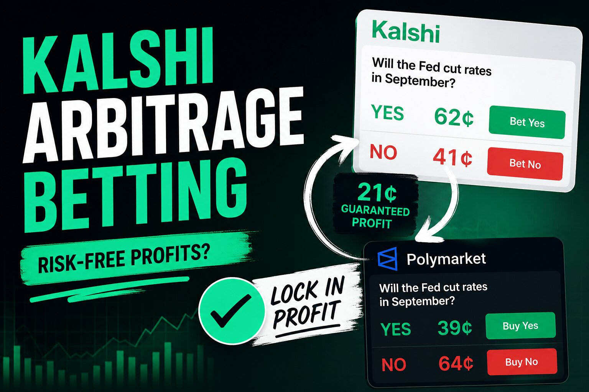

Kalshi Arbitrage Betting: How It Works and What It Actually Pays

The short answer
Kalshi arbitrage means buying opposite sides of the same real-world outcome across two different venues — Kalshi and a traditional sportsbook, or Kalshi and another prediction market like Polymarket — so that your combined position pays out more than it cost, regardless of the actual result. It's the same core logic as traditional two-way arbitrage betting, applied across a regulated exchange and either a bookmaker or a peer-to-peer market instead of two bookmakers. The gaps exist because these are structurally different pricing systems that don't always agree, and they can be wider than gaps between two sportsbooks precisely because the underlying mechanisms are so different.
Why the price gaps exist in the first place
Sharp sportsbooks aggregate money from professional bettors worldwide and move their lines within seconds of new information, so their odds tend to be extremely tight. Kalshi's pricing comes from a different source entirely — a peer-to-peer pool of traders whose composition, sentiment, and speed of reaction can diverge from a sportsbook's, especially during a surge of retail activity or a fast-moving news event. When enough money moves unevenly, the same outcome ends up priced differently on the two venues at the same moment, and that gap is the arbitrage opportunity.
Kalshi vs. a sportsbook: the basic trade
Find the same outcome listed on Kalshi and at a sportsbook, convert both to an implied probability, and compare. If Kalshi prices an outcome cheaper than the sportsbook's equivalent side, and the sportsbook's price on the opposite outcome is also favorable relative to Kalshi's, buying both captures the gap — whichever side wins, one leg pays out enough to cover the other's cost and leave a profit. Because Kalshi's contracts settle at exactly $1 or $0 with no bookmaker vig baked in, the comparison is more direct than it would be between two traditional sportsbooks, where the vig on both sides has to be backed out first.
Kalshi vs. Polymarket: the other main version
The same logic applies between Kalshi and Polymarket, since both list contracts on many of the same real-world events. Traders have reported small but real, repeatable gaps — commonly in the range of roughly half a cent to a few cents per dollar on heavily traded events like major sports championships — where buying the underpriced side on one platform and the underpriced opposite side on the other locks in the spread regardless of outcome. Because Polymarket and Kalshi have different fee structures, user bases, and settlement mechanics, gaps here can persist a little longer than the tightest sportsbook-to-sportsbook markets, though competition from automated bots has compressed the window considerably compared to a couple of years ago.
What actually eats the edge
Every one of these trades looks cleaner on paper than in execution. Fees matter more than they first appear: Kalshi charges a per-contract fee that scales with a market's price and can vary with your account's trading volume, and thin spreads that look profitable before fees often aren't after them — a gap under roughly five to six percent frequently doesn't survive the combined cost of both legs. Timing risk is the other major factor. Prices move while you're placing the second leg of a trade, and by the time both sides are filled, part or all of the spread can already be gone — which is exactly why manual scanning has become close to impractical, and why most people running this strategy consistently rely on automated tools to catch and execute gaps in seconds rather than minutes.
There's also a resolution-criteria risk specific to cross-platform trades that's easy to overlook. The same real-world event can be defined slightly differently by two venues — different settlement dates, different data sources, different edge-case rules — and a widely cited example from a past government shutdown saw one platform resolve a market "Yes" while another resolved the ostensibly equivalent contract "No," because the fine print of what counted as resolution differed. Before treating any cross-platform gap as locked-in profit, it's worth confirming the two contracts genuinely settle on the same criteria, not just the same headline question.
What a realistic return looks like
Industry estimates for cross-platform prediction-market arbitrage put a typical edge per opportunity in the low single digits as a percentage, with several tradeable gaps appearing per week on heavily traded events rather than constantly. That translates to a modest, repeatable return for traders running it seriously and consistently — closer to a steady side strategy than a way to generate outsized returns fast. Bigger returns some traders report tend to come from combining arbitrage with other approaches, running larger capital, or adding automation, not from arbitrage in isolation.
Before you treat any specific gap as free money
Confirm both venues' resolution criteria actually match before committing capital to a cross-platform trade. Account for the full fee structure on both sides, not just the headline spread. Size trades so that execution delay on the second leg doesn't leave you accidentally holding a one-sided directional bet instead of a locked spread. And remember that Kalshi's sports-related contracts aren't available in every US state — several have active legal challenges or restrictions in place as of mid-2026 — so confirm your own eligibility before planning a cross-platform strategy around it.
Disclaimer: This post is for informational purposes only and is not financial, legal, or tax advice. Arbitrage trading carries real execution and resolution risk despite being theoretically low-risk, and reported spreads, fees, and return figures reflect third-party research and public reporting rather than guaranteed outcomes. Platform availability varies by jurisdiction and is subject to ongoing legal disputes — confirm current eligibility and terms directly on kalshi.com and any other platform before trading.